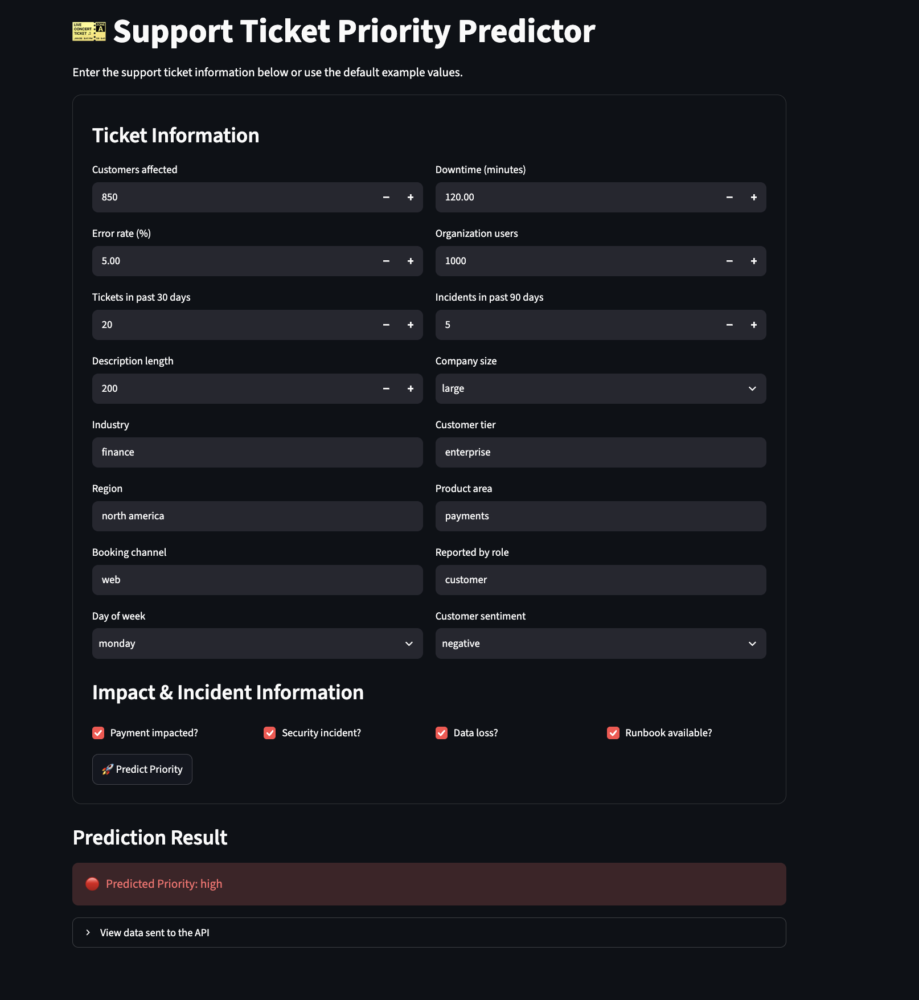

MACHINE LEARNING • MLOPS
Support Ticket Priority Prediction
Developed an end-to-end machine learning application to predict support ticket priority using customer-impact, operational, and organizational features.
Built the prediction pipeline with Random Forest, exposed the model through a FastAPI REST API, containerized the service with Docker, and developed an interactive Streamlit interface for real-time predictions.
Python
Random Forest
FastAPI
Docker
Streamlit